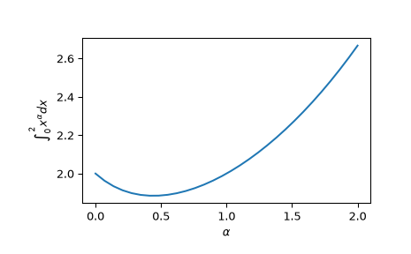

quad_vec#
- scipy.integrate.quad_vec(f, a, b, epsabs=1e-200, epsrel=1e-08, norm='2', cache_size=100000000.0, limit=10000, workers=1, points=None, quadrature=None, full_output=False, *, args=())[source]#
Adaptive integration of a vector-valued function.
- Parameters:
- fcallable
Vector-valued function f(x) to integrate.
- afloat
Initial point.
- bfloat
Final point.
- epsabsfloat, optional
Absolute tolerance.
- epsrelfloat, optional
Relative tolerance.
- norm{‘max’, ‘2’}, optional
Vector norm to use for error estimation.
- cache_sizeint, optional
Number of bytes to use for memoization.
- limitfloat or int, optional
An upper bound on the number of subintervals used in the adaptive algorithm.
- workersint or map-like callable, optional
If workers is an integer, part of the computation is done in parallel subdivided to this many tasks (using
multiprocessing.pool.Pool). Supply -1 to use all cores available to the Process. Alternatively, supply a map-like callable, such asmultiprocessing.pool.Pool.mapfor evaluating the population in parallel. This evaluation is carried out asworkers(func, iterable).- pointslist, optional
List of additional breakpoints.
- quadrature{‘gk21’, ‘gk15’, ‘trapezoid’}, optional
Quadrature rule to use on subintervals. Options: ‘gk21’ (Gauss-Kronrod 21-point rule), ‘gk15’ (Gauss-Kronrod 15-point rule), ‘trapezoid’ (composite trapezoid rule). Default: ‘gk21’ for finite intervals and ‘gk15’ for (semi-)infinite.
- full_outputbool, optional
Return an additional
infoobject.- argstuple, optional
Extra arguments to pass to function, if any.
Added in version 1.8.0.
- Returns:
- res{float, array-like}
Estimate for the result
- errfloat
Error estimate for the result in the given norm
- infoobject
Returned only when
full_output=True. Result object with the attributes:- successbool
Whether integration reached target precision.
- statusint
Indicator for convergence, success (0), failure (1), and failure due to rounding error (2).
- nevalint
Number of function evaluations.
- intervalsndarray, shape (num_intervals, 2)
Start and end points of subdivision intervals.
- integralsndarray, shape (num_intervals, …)
Integral for each interval. Note that at most
cache_sizevalues are recorded, and the array may contains nan for missing items.- errorsndarray, shape (num_intervals,)
Estimated integration error for each interval.
Notes
The algorithm mainly follows the implementation of QUADPACK’s DQAG* algorithms, implementing global error control and adaptive subdivision.
The algorithm here has some differences to the QUADPACK approach:
Instead of subdividing one interval at a time, the algorithm subdivides N intervals with largest errors at once. This enables (partial) parallelization of the integration.
The logic of subdividing “next largest” intervals first is then not implemented, and we rely on the above extension to avoid concentrating on “small” intervals only.
The Wynn epsilon table extrapolation is not used (QUADPACK uses it for infinite intervals). This is because the algorithm here is supposed to work on vector-valued functions, in an user-specified norm, and the extension of the epsilon algorithm to this case does not appear to be widely agreed. For max-norm, using elementwise Wynn epsilon could be possible, but we do not do this here with the hope that the epsilon extrapolation is mainly useful in special cases.
References
[1] R. Piessens, E. de Doncker, QUADPACK (1983).
Examples
We can compute integrations of a vector-valued function:
>>> from scipy.integrate import quad_vec >>> import numpy as np >>> import matplotlib.pyplot as plt >>> alpha = np.linspace(0.0, 2.0, num=30) >>> f = lambda x: x**alpha >>> x0, x1 = 0, 2 >>> y, err = quad_vec(f, x0, x1) >>> plt.plot(alpha, y) >>> plt.xlabel(r"$\alpha$") >>> plt.ylabel(r"$\int_{0}^{2} x^\alpha dx$") >>> plt.show()

When using the argument workers, one should ensure that the main module is import-safe, for instance by rewriting the example above as:
from scipy.integrate import quad_vec import numpy as np import matplotlib.pyplot as plt alpha = np.linspace(0.0, 2.0, num=30) x0, x1 = 0, 2 def f(x): return x**alpha if __name__ == "__main__": y, err = quad_vec(f, x0, x1, workers=2)